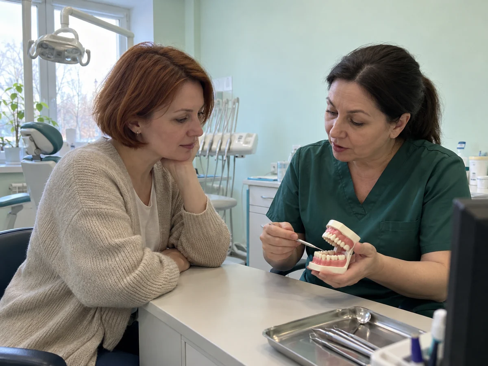
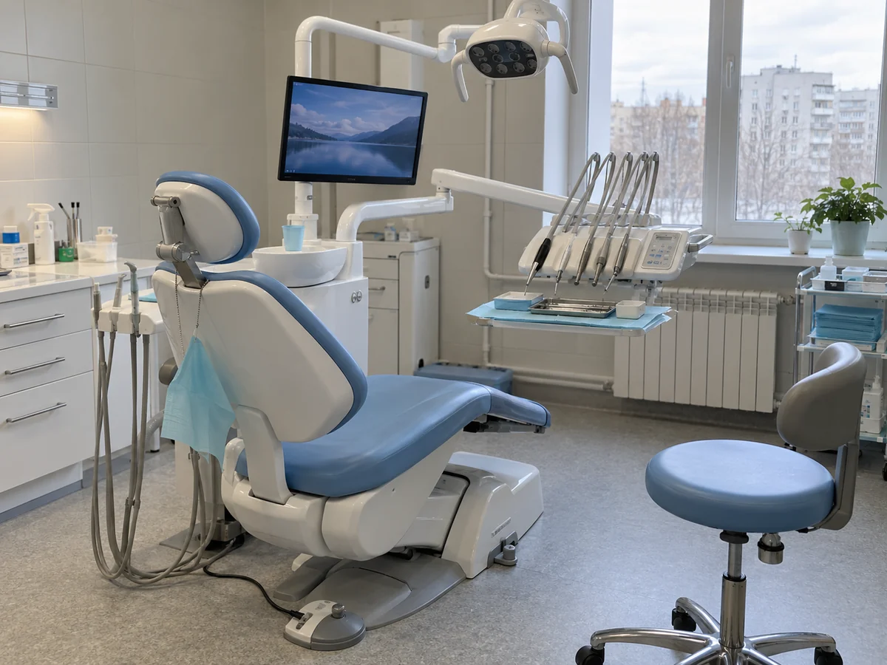
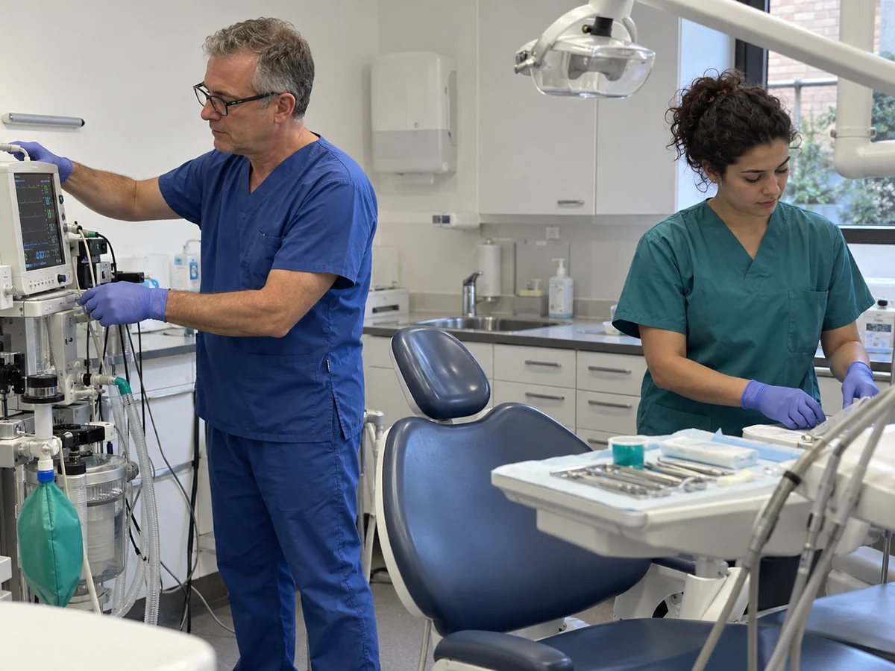
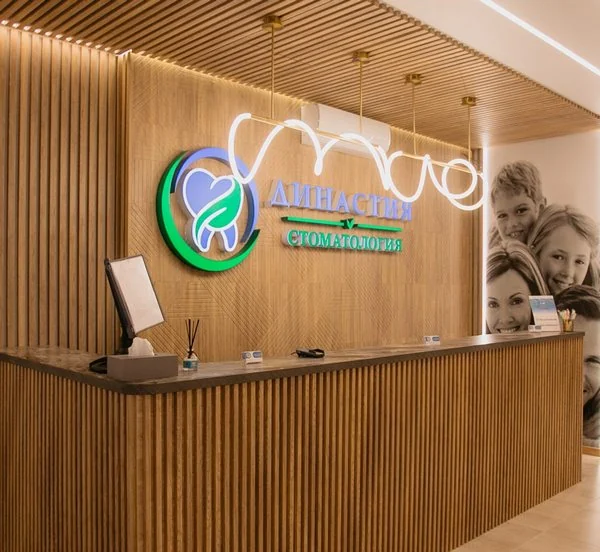
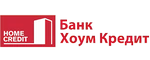
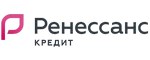

Обсудим ваши опасения и возможности лечения во сне.
Спокойно. Бережно. Рядом.
Лечение зубов во сне в Пушкино – современный подход без стресса
Вы отдыхаете.
Мы заботимся о вашей улыбке.
Обсудите с врачом возможность лечения под седацией или наркозом.
Как проходит лечение ↓
Комфорт начинается с доверияКонтроль состояния пациента на протяжении процедуры.
Объём лечения определим заранее на консультации.
Метод анестезии подбирается после обследования.
Узнаёте себя?
Хочется вылечить зубы.
Хочется вылечить зубы.
Но что-то останавливает.
Страшно идти к стоматологу
Начните со знакомства. Расскажите врачу, что вызывает тревогу.
Предстоит большое лечение
Обсудим, какие процедуры можно объединить в один визит.
Ребёнку сложно в кресле
Врач оценит ситуацию и предложит подходящий способ лечения.
Современная стоматология избавляет от страха перед бормашиной и уколами. Лечение зубов во сне — один из самых комфортных методов для тех, кто откладывает визит к стоматологу из-за тревоги. В клинике «Династия» используется глубокая седация и наркоз, чтобы обеспечить пациенту спокойствие, а врачу — точность и эффективность в работе.
Что такое глубокая седация в стоматологии
Седация — это управляемое медикаментозное расслабление, при котором пациент находится в состоянии дремы. Человек не чувствует боли, не испытывает страха, но способен дышать самостоятельно. Седация мягко выводит из сознания без полной потери контроля над функциями организма. Процедура проводится под контролем анестезиолога, в условиях максимальной безопасности.

Почему всё больше пациентов выбирают лечение под седацией
Седация помогает устранить главный барьер — страх . Пациенты не помнят манипуляций, не чувствуют дискомфорта и не испытывают усталости. Метод позволяет вылечить несколько зубов за одно посещение, не травмируя психику и не перегружая нервную систему. Особенно актуально для людей с выраженной стоматофобией, повышенным рвотным рефлексом и хронической тревожностью.
Показания к лечению под медикаментозным сном
Лечение зубов во сне рекомендовано:
-
при паническом страхе перед стоматологом;
-
при непереносимости местных анестетиков;
-
в случаях с нарушениями развития или неврологическими патологиями;
-
для маленьких детей, которые не могут усидеть в кресле;
-
при необходимости проведения длительных или сложных процедур.
Когда седация противопоказана
Несмотря на безопасность метода, существуют противопоказания:
-
тяжёлые заболевания сердца и сосудов;
-
инфекционные процессы в стадии обострения;
-
беременность и период лактации;
-
аллергия на препараты для седации;
-
патологии печени, почек или дыхательной системы.
В клинике «Династия» каждый случай оценивается индивидуально — перед процедурой пациент проходит обследование и получает консультацию анестезиолога.
Личный разговор вместо догадок
Подойдёт ли мне лечение во сне?
Оставьте номер — администратор поможет записаться на консультацию и выбрать удобное время.
+7 (499) 707-25-35Как проходит лечение зубов под седацией
Перед визитом пациент сдаёт анализы, ЭКГ и проходит осмотр.
В день процедуры внутривенно вводится препарат, и через несколько минут человек засыпает.
Всё лечение проводится в этом состоянии.
Пациент не реагирует на боль, звуки или движения.
По завершении анестезиолог мягко выводит его из сна.
В течение часа пациент приходит в норму и может отправляться домой.
Преимущества седации в стоматологии «Династия»
-
Без боли и страха — пациент не чувствует ничего;
-
Комфортное лечение — без стресса и дискомфорта;
-
Высокая точность работы врача — нет сопротивления со стороны пациента;
-
Экономия времени — возможно вылечить сразу несколько зубов;
-
Минимальные побочные эффекты — препараты подбираются строго индивидуально.
Первый шаг — просто разговор
Не откладывайте заботу о себе
Расскажите о своих опасениях. Начнём с консультации и подберём подходящий план лечения.
Лечение под наркозом: полное отключение от реальности
В отличие от седации, наркоз — это полное отключение сознания с контролем всех жизненно важных функций. Метод применяется при хирургических вмешательствах или когда даже седация не даёт должного расслабления. В клинике «Династия» используется современное наркозное оборудование и сертифицированные препараты, а за состоянием пациента следит опытная команда анестезиологов.

Показания к общему наркозу в стоматологии
Общий наркоз необходим:
-
при обширной имплантации;
-
для удаления ретинированных зубов;
-
при сложных костных операциях;
-
в случае полного отказа от лечения под местной анестезией;
-
для пациентов с тяжёлыми формами неврологических или психических нарушений.
Преимущества наркоза при стоматологическом лечении
-
Абсолютная изоляция от происходящего — нет воспоминаний о лечении;
-
Комфорт для пациента и врача — исключены любые реакции;
-
Возможность выполнить сложные процедуры за один приём ;
-
Безопасность — мониторинг всех показателей организма на протяжении процедуры.
Личный разговор вместо догадок
Узнайте, с чего начать лечение
Оставьте номер — администратор поможет записаться на консультацию и выбрать удобное время.
+7 (499) 707-25-35Что нужно знать о рисках и подготовке
Любой тип анестезии требует подготовки. Пациенту назначают:
-
анализ крови;
-
ЭКГ;
-
консультацию терапевта и анестезиолога;
-
УЗИ, если есть сопутствующие заболевания.
После наркоза возможна кратковременная слабость, головокружение, сухость во рту. Важно обеспечить сопровождение и спокойное восстановление в течение суток.
Как проходит лечение в клинике «Династия»
В клинике применяются современные протоколы, строгий контроль безопасности и индивидуальный подбор метода анестезии . Все процедуры проводятся в условиях полной стерильности и под контролем врача-анестезиолога. Команда клиники создаёт комфортную обстановку и тщательно следит за состоянием пациента на всех этапах лечения — от подготовки до выхода из наркоза.
После процедуры: рекомендации и восстановление
После лечения пациент проводит 1–2 часа в клинике под наблюдением. Затем можно вернуться домой. Врач даёт чёткие рекомендации, при необходимости назначает приём препаратов. Как правило, на следующий день человек уже чувствует себя хорошо и может вернуться к привычному ритму жизни.
Личный разговор вместо догадок
Готовы сделать первый шаг?
Оставьте номер — администратор поможет записаться на консультацию и выбрать удобное время.
+7 (499) 707-25-35Почему лечение во сне выбирают в «Династии»
Клиника «Династия» в Пушкино — это современная стоматология, где безопасность, комфорт и индивидуальный подход стоят на первом месте. Команда специалистов имеет опыт работы с пациентами любого возраста и уровня тревожности. Оснащение клиники позволяет проводить лечение даже в самых сложных случаях — точно, эффективно и без боли.

Будем рады знакомству
Ваша «Династия» рядом
4 клиники в Пушкино и Ивантеевке
Запись на приём
Запишитесь на приём в удобное время
Оставьте контакты — поможем выбрать врача, клинику и время приёма.
Гарантия на лечение
Рассрочка 0%
Опытные врачи
Приём в день обращения
Лечи сейчас — плати потом
Лечим зубы в рассрочку!
Начните лечение сейчас и распределите оплату на удобные платежи.
План лечения
Выбираем необходимые процедуры и рассчитываем стоимость.
Удобный платёж
Подбираем срок и график оплаты вместе с банком-партнёром.
Понятные условия
Срок, размер платежа и условия одобрения уточняются при оформлении.

